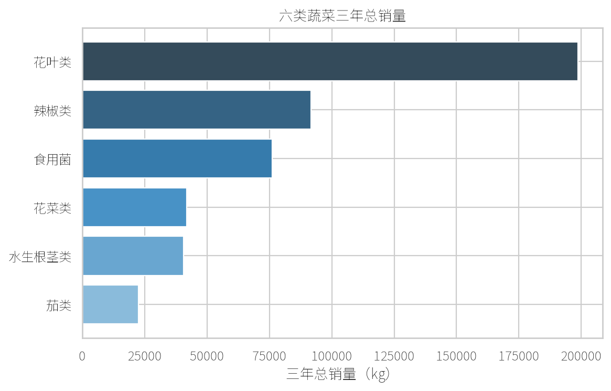
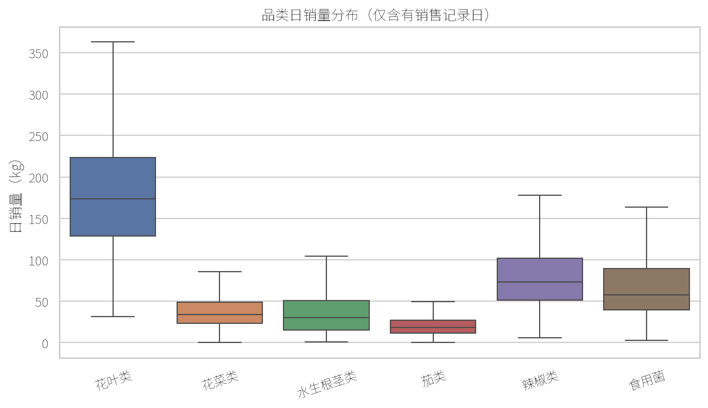
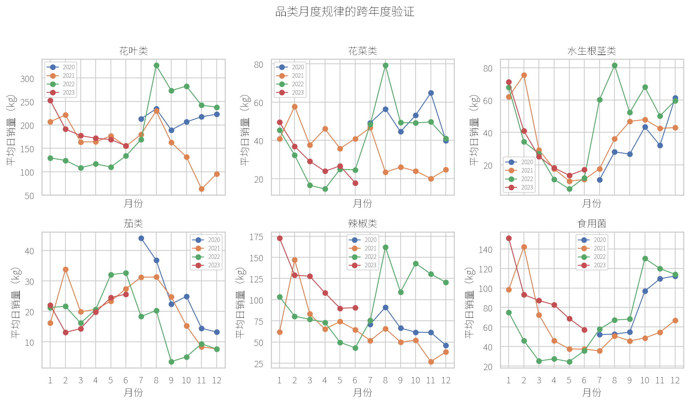
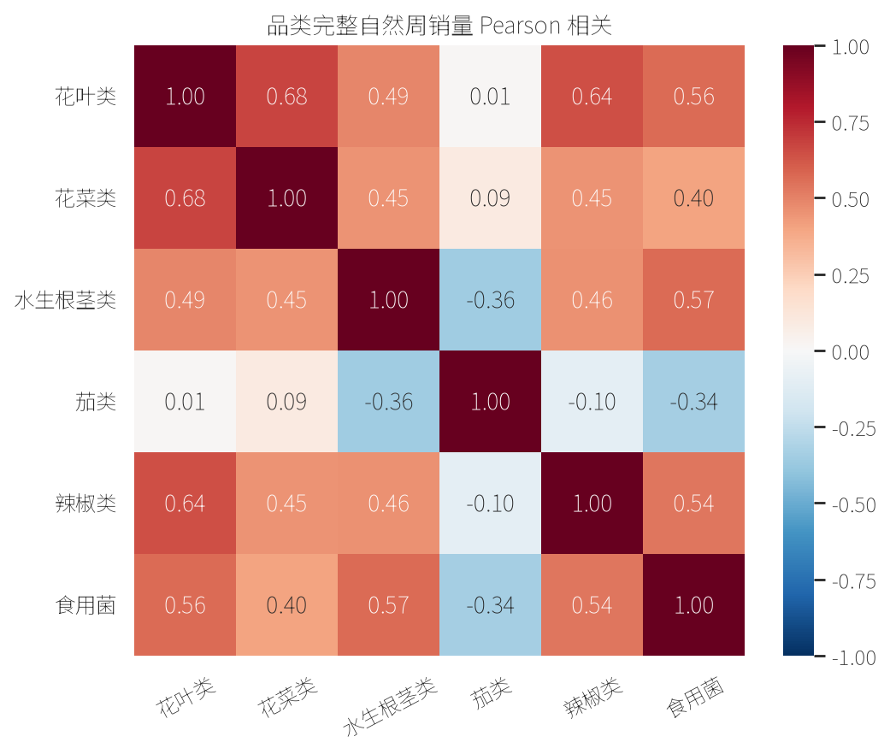
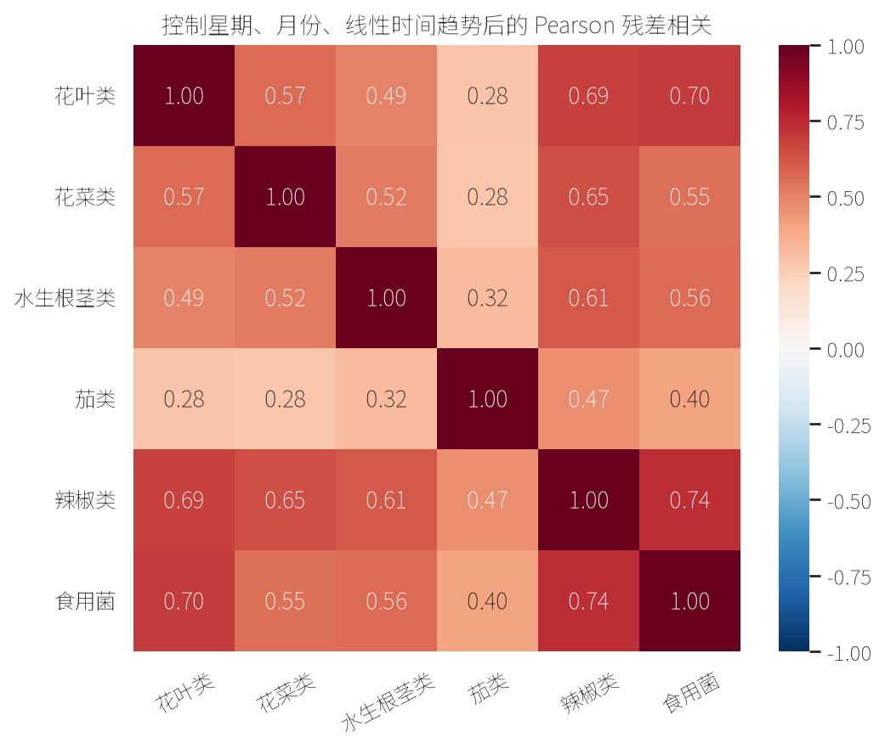
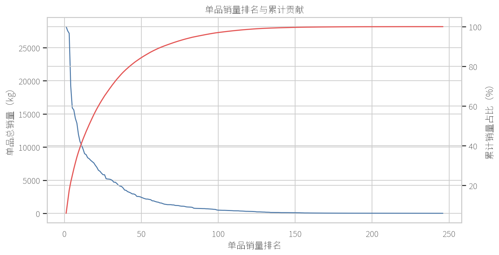

2023 年全国大学生数学建模竞赛 C 题
问题一分析报告
蔬菜品类与单品销售量的分布规律及相互关系｜论文初稿说明版
阅读导航
1. 研究思路与数据口径
问题一按四块组织：品类销量分布规律、品类之间的相互关系、单品销量分布规律、单品之间的相互关系。品类数量少且持续观测，适合研究总体时间变化和多尺度关系；单品的上架、退出和销售覆盖期不同，因此单品统计只在有销售记录日上计算，单品关系只在共同销售日上计算。
| 数据审计结果 | 数值/结论 |
|---|---|
| 销售日期范围 | 2020-07-01 至 2023-06-30，共 1095 个日历日 |
| 全店无销售记录日 | 10 天；不称为停业日，也不补为零销量 |
| 有效销售日期 | 1085 天 |
| 实际销售单品 | 246 个；单品日汇总记录 46595 条 |
2. 统计方法与公式
设某对象在相应有效销售日上的销量为 \(x_1,x_2,\ldots,x_n\)，使用平均销量、标准差和变异系数描述典型水平、绝对波动和相对波动：
第一、第三四分位数 \(Q_1,Q_3\) 描述主体区间；偏度用于识别少数高销量日形成的右尾。Pearson 相关衡量线性同步变化，Spearman 相关先将销量转换为秩，对极端观测更稳健：
3. 品类销量分布规律
销售规模与波动：花叶类三年总销量最高（198659.55 kg），茄类最低（22442.12 kg）。花叶类 CV 为 0.47，在六类中最低，表现为规模最大且相对稳定；水生根茎类 CV 为 0.84，表现为相对波动最强。各品类偏度均为正，说明均存在不同程度的右尾。
| 品类 | 总销量/kg | 日均/kg | 中位数/kg | 标准差/kg | CV | Q1/kg | Q3/kg | 偏度 |
|---|---|---|---|---|---|---|---|---|
| 花叶类 | 198659.55 | 183.10 | 173.21 | 86.30 | 0.47 | 128.70 | 223.66 | 2.90 |
| 辣椒类 | 91645.11 | 84.47 | 72.93 | 53.46 | 0.63 | 51.24 | 102.13 | 3.14 |
| 食用菌 | 76131.73 | 70.17 | 57.54 | 48.52 | 0.69 | 39.32 | 89.19 | 3.00 |
| 花菜类 | 41789.78 | 38.52 | 34.07 | 22.71 | 0.59 | 23.31 | 48.62 | 1.52 |
| 水生根茎类 | 40607.55 | 37.43 | 30.29 | 31.37 | 0.84 | 15.09 | 50.85 | 2.50 |
| 茄类 | 22442.12 | 20.68 | 18.32 | 13.49 | 0.65 | 11.68 | 26.83 | 1.59 |


时间规律：按自然星期计算，周六、周日平均销量普遍高于多数工作日。当前未单独剔除法定节假日与调休日期，因此这一结果只能表述为自然星期下的描述性差异，不能完全解释为纯粹的普通工作日/周末效应，更不据此推断客流、家庭采购或商场活动等机制。
月度均值有变化，但完整的 2021、2022 年比较后，六个品类均未同时满足“Pearson 与 Spearman 均不低于 0.50，且峰值、低谷月份均相差不超过 1 个月”的保守重复规则。因此只能表述为月度变化特征，不能认定为稳定季节规律。28 日历日窗口内的有效观测日平均和长期趋势图仅辅助展示低频变化。

4. 品类之间的相互关系
同时计算日尺度与完整自然周尺度的 Pearson/Spearman 相关。完整自然周仅保留周一至周日均有销售记录的 150 周；旧的 157 周汇总口径包含无销售记录日和首尾不完整周，只作审计对照。
为避免两个品类只是因为都在周末较高、都随月份变化而表现出表面相关，对各品类日销量使用下式控制星期、月份和长期线性趋势：
其中 \(t\) 是距起始日期的实际日历天数，\(\varepsilon_t\) 是去除共同时间规律后的剩余波动；另加入年份固定效应作为敏感性检验。下列关系可称为“控制时间规律后仍存在正向同步变化”，不能解释为因果、互补或替代。
| 品类对 | 日 Pearson | 完整周 Pearson | 残差 Pearson | 残差 Spearman | 年份效应残差 Pearson |
|---|---|---|---|---|---|
| 辣椒类—食用菌 | 0.69 | 0.54 | 0.74 | 0.62 | 0.74 |
| 花叶类—花菜类 | 0.63 | 0.68 | 0.57 | 0.54 | 0.56 |
| 水生根茎类—食用菌 | 0.67 | 0.57 | 0.56 | 0.35 | 0.63 |


5. 单品销量分布规律
销量集中：246 个实际销售单品中，销量 Top 10 贡献约 39.1%，Top 20 贡献约 57.2%。少数高销量单品贡献较大比例销售量，但这些结果不足以证明单品销量服从某种特定幂律或长尾分布。
覆盖期与有销售日波动：单品销售天数中位数仅为 81 天。分析表逐个记录首次销售日期、最后销售日期、活跃跨度、销售天数及其占活跃跨度比例；有销售日均值、中位数、标准差和 CV 也只在单品实际有销售记录的日期上计算。未出现日期可能表示尚未上架、已退出或状态未知，不能自动解释为零销量。因此不对全部 246 个单品机械补做星期、月份或长期趋势分析，以免把覆盖期差异误读为季节性。

6. 单品之间的相互关系
令 \(T_i,T_j\) 分别为单品 \(i,j\) 有销售记录的日期集合，则
只在共同销售日期集合 \(T_{ij}\) 上计算相关。246 个单品共有 \(\binom{246}{2}=30135\) 对，但共同销售日数的 Q1、中位数、Q3 分别为 0、1、18 天，故不能对全部单品对无条件解释相关系数。
先比较 \(n\ge30\) 和 \(n\ge60\) 两个样本量门槛；正文主结论采用更严格的规则：
即共同销售日不少于 60 天，Pearson/Spearman 同号且均达到中等强度。筛选得到 269 对稳健关系：267 对正相关、2 对负相关；96 对同品类、173 对跨品类。完整名单、Top100 和 Pearson/Spearman 差异明细仅留在分析目录或附录。
| 代表性单品对 | 类型 | 共同销售日 | Pearson | Spearman | 正文表述 |
|---|---|---|---|---|---|
| 云南生菜(份)—云南油麦菜(份) | 同品类正相关 | 387 | 0.727 | 0.721 | 正向同步线索 |
| 上海青—云南油麦菜 | 同品类正相关 | 765 | 0.563 | 0.599 | 正向同步线索 |
| 大白菜—平菇 | 跨品类正相关 | 262 | 0.700 | 0.746 | 正向同步线索 |
| 大白菜—甜白菜 | 同品类负相关 | 248 | -0.450 | -0.599 | 反向同步线索；替代性需进一步验证 |
7. 结论、图表取舍与限制
| 可保留结论 | 证据 | 表述限制 |
|---|---|---|
| 六品类的规模与相对波动不同 | 总销量、日均、中位数、CV、箱线图 | 描述差异，不解释成因 |
| 自然星期下周末销量总体较高 | 有效星期日均销量 | 未剔除节假日与调休，不解释为纯工作日效应 |
| 月度变化存在但跨完整年度不稳定 | 2021/2022 月均曲线核验 | 不称稳定季节性 |
| 三组重点品类存在正向同步线索 | 日、完整周、残差及年份效应敏感性 | 不是因果、互补或替代 |
| 单品关系需以共同销售日为条件 | overlap 分布和 n≥60 双相关筛选 | 不把未知日期补零 |
正文建议：六品类描述统计表、品类总销量与箱线图、星期规律图或跨年度月份图、完整自然周热图、残差热图、单品累计贡献图和代表性单品关系表。28 日趋势、长期趋势、旧周口径、全量单品对和明细审计均留在附录或分析目录。